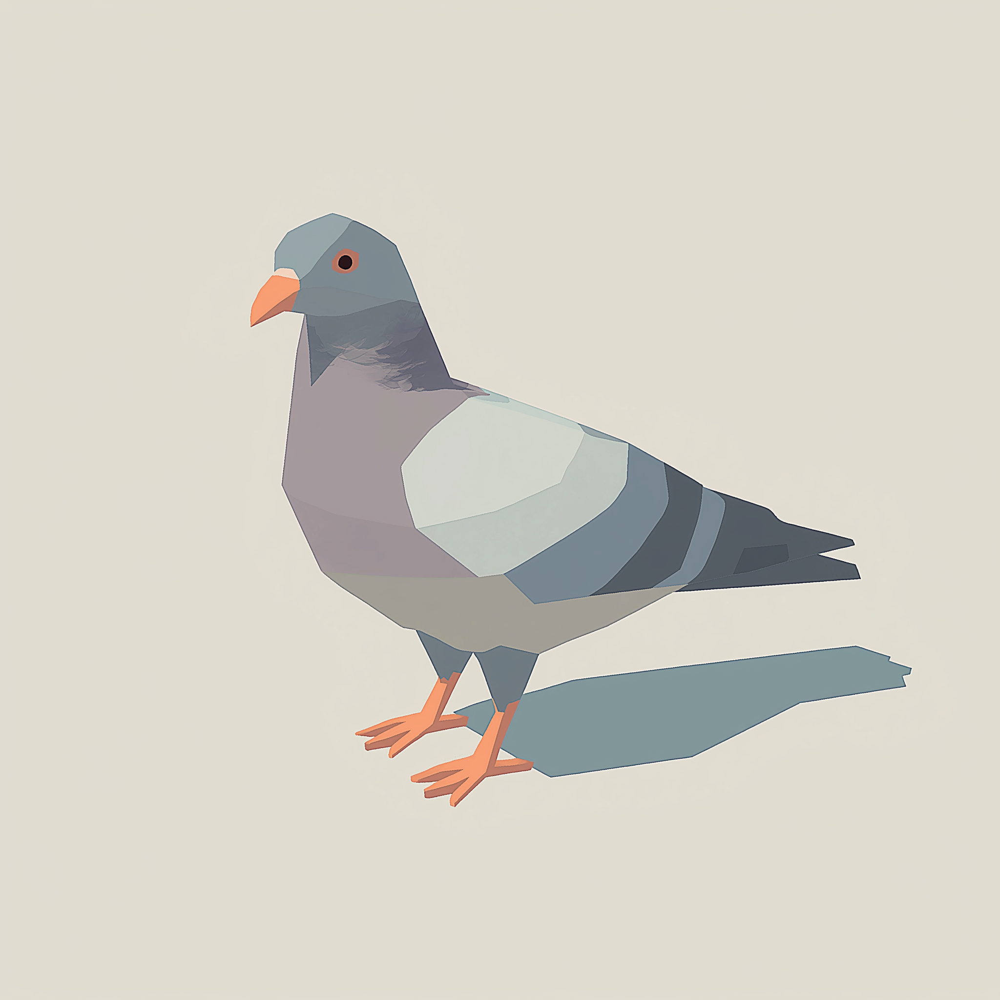

<div style="margin: 10px;">
  <h2>Blog</h2>
  <a href="https://lowpolybrainblasts.pika.page/" target="_blank" class="inline-img-text" style="margin: 10px 0; text-decoration: none; cursor: pointer;">
    
   <p style="font-size: 18px; font-weight: 500;">low poly brainblasts</p>
  </a>
  <div id="rss-feed"></div>
</div>
